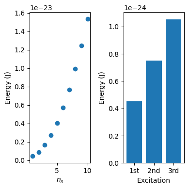

3. Internal Energy (U)#
The energy contained within the system is the internal energy. An atom or molecule’s internal energy is determined by the energy states it occupies. There are five main categories of energy states: nuclear, translational, rotational, vibrational, and electronic.
Because it requires an extremely large amount of energy to excite a nucleus from its ground energy state to its first excited state[1], we will assume all atoms are in their nuclear ground state and not speak of them any further.
Thus, we can describe the total internal energy of a system as the sum of the internal energy contributed by each category:
3.1. Translational Energy States#
There are two key models for the internal (kinetic) energy of translation:
Developed through observation and empirical measurement of moving objects[2]:
where:
\(m\) is the particle mass
\(\vec{v}\) is the particle velocity, a continuous quantity
Note that \(\vec{v} = \sqrt{v_x^2+v_y^2+v_z^2}\), where \(v_i\) indicates the velocity in the \(i\)-direction
Developed through applying quantum theory to describe a particle confined to a 3-dimensional box:
where:
\(h\) is Planck’s constant
\(m\) is the particle mass
\(L_x\), \(L_y\), \(L_z\) are the \(x\)-, \(y\)-, and \(z\)-direction box lengths, respectively
\(n_x\), \(n_y\), \(n_z\) are translational quantum numbers, which can take integer values \(\geq 1\)
Note that each integer \(n_i\) corresponds to a unique velocity in the \(i\)-direction.
Note that the classical model describes translational energy states as continuous because \(m\) and \(\vec{v}\) are continuous. Energy states can be indexed by a unique combination of \((v_x, v_y, v_z)\). In contrast, the quantum model describes translational energy states as quantized, based on the integer translational quantum numbers \(n_x\), \(n_y\), and \(n_z\). How significant is this difference? Let’s investigate in the exercise below!
Exercise 3.1 (Neon translating in a box)
Using the 3-dimensional quantum particle in a box model to approximate the translational energy levels of a single neon atom. Let \(L_x = L_y = L_z = 3.3\cdot 10^{-9}\, \mathrm{m}\) [3]. Create a 2-panel subplot with:
(i) A scatterplot of Energy (J) vs translational energy state, for the first 10 translational energy states: index each state by \(n_x\), while holding \(n_y = n_z = 1\)
(ii) A bar plot of the change in Energy (J) vs. excitation, for the first three excitations:
1st excitation: \(U (\mathrm{n_x = 2, n_y=1, n_z=1}) - U(\mathrm{n_x = 1, n_y=1, n_z=1})\)
2nd excitation: \(U (\mathrm{n_x = 3, n_y=1, n_z=1}) - U(\mathrm{n_x = 2, n_y=1, n_z=1})\)
3rd excitation: \(U (\mathrm{n_x = 4, n_y=1, n_z=1}) - U(\mathrm{n_x = 3, n_y=1, n_z=1})\)
What does the answer to (a) suggest about the difference between using the classical vs. quantum models for translational energies?
#your answer here!
Solution to Exercise 3.1 (Neon translating in a box)
import numpy as np
import matplotlib.pyplot as plt
#(a)
L = 3.3E-9 #m
m = 3.35E-26 #kg (Neon atom)
h = 6.626E-34 #Js
nx = np.linspace(1, 10, 10)
ny = 1
nz = ny
U_quantum = h**2/(8*m*L**2) * (nx**2 + ny**2 + nz**2)
fig, (ax1, ax2) = plt.subplots(nrows = 1, ncols = 2, figsize=(4,4))
ax1.plot(nx, U_quantum, 'o')
ax1.set_ylabel("Energy (J)")
ax1.set_xlabel("$n_x$")
x_diffs = ['1st', '2nd', '3rd']
y_diffs = [U_quantum[1]-U_quantum[0], U_quantum[2]-U_quantum[1], U_quantum[3]-U_quantum[2]]
ax2.bar(x_diffs,y_diffs)
#ax2.tick_params(axis='x', rotation=20)
ax2.set_ylabel("Energy (J)")
ax2.set_xlabel("Excitation")
plt.tight_layout()

The difference in energy between translational levels is very small (i.e., negligible). It’s reasonable to model the system as continuous (i.e., classically).
3.2. Glossary#
- internal energy#
The energy is the total kinetic and potential energy defined by and contained within a system, irrespective of external frames of reference. For example, a balloon of air tied to a fence and a balloon of air in a moving car have different kinetic energies relative to an inidivual observer walking down the street. The internal energy reflects only the system energy relative to its own coordinate system and state variables.
- nuclear#
Nuclear energy levels describe the quantized energy states that nucleons can occupy.
- translational#
Translational energy levels are the allowed kinetic energy states associated with translational motion.
- rotational#
Rotational energy levels are the allowed energy states associated with rotational motion.
- vibrational#
Vibrational energy levels are the allowed energy states associated with rotational motion.
- electronic#
Electronic energy levels are the allowed energy states associated with electronic transitions.
- Planck’s constant#
Quantum proportionality constant between energy and wavelength: \(6.626 \cdot10^{−34}\, \mathrm{J\cdot Hz^{−1}}\)